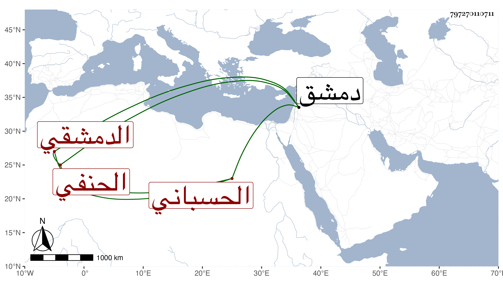

0902Sakhawi.DawLamic.ITO20230111-ara1.EIS1600.797270110711
Biography ID: 797270110711
185
عبد الرحمن بن أحمد بن محمد عبد الله الزين أبو هريرة بن الشهاب بن الجلال أبي عبد الله الحسباني الدمشقي الحنفي والد أمين الدين محمد الآتي ويلقب هامان . حفظ الدرر واستقر في قضاء الحنفية بدمشق في ذي القعدة سنة إحدى وتسعين ببذل زائد عوض إسماعيل أخي كبيش العجم وكلاهما من كبار الجهال ثم صرف بابن القطب وهو أمثل منهما وأهين هذا مرة بعد أخرى وهو الآن سنة سبع وتسعين شبه المقعد ، ومات ابنه المذكور الذي استقر في كتابة دمشق مع أخيه كلاهما بالطاعون وليته كان معهما .
